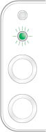
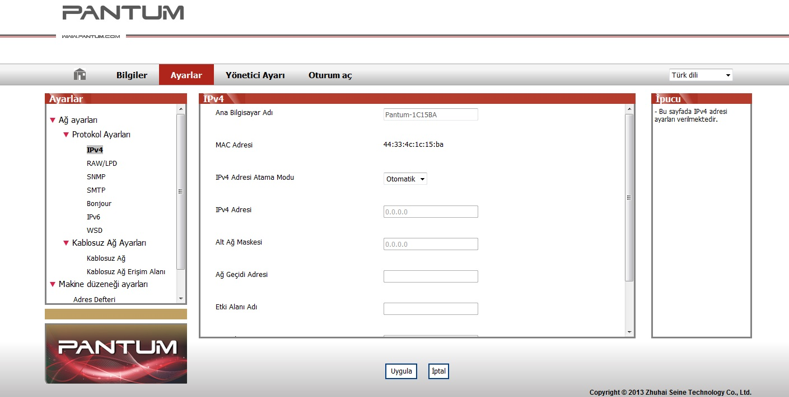

4. Kablolu Ağ Ayarları (Kablolu ağ yazıcı modelleri için)
Yazıcıdaki bazı ağ parametrelerini ayarlamanız gerekebilir. Bu parametreler, ekli Web sunucusundan ayarlanabilir.
4.1. IP Adresini Ayarlama
Yazıcının IP adresi, DHCP fonksiyonu üzerinden otomatik olarak elde edilebilir veya el ile ayarlanabilir.
| Otomatik Ayar
DHCP otomatik ayar işlevi yazıcıda varsayılan olarak etkinleştirilmiştir.
1. Yazıcıyı bir ağ kablosu ile ağa bağlayın ve başlangıç hazırlama işlerimi tamamlayın.
2. Yazıcı, sunucu tarafından atanan IP adresini otomatik olarak alacaktır. Otomatik olarak alınan IP adresi birkaç dakika sonra kullanılabilir.
|
|
Not:
|
• DHCP IP adresini otomatik olarak alamazsa, yazıcı otomatik olarak varsayılan IP adresini kullanacaktır: 169.254.xx.xx.
• DHCP özellikleri nedeniyle, yazıcı uzun süre boyunca kullanılmazsa veya ağ erişim noktası değişirse, yazıcı tarafından otomatik olarak atanan yazıcının IP adresi farklılık gösterebilir ve bu da başarısız yazıcı bağlantısı ile sonuçlanabilir. Ağ tarafından otomatik olarak atanan IP adresinin, DHCP işlevi etkinken, yazıcının Mac adresine bağlı olması önerilir.
|
| Manuel Ayar
Yazıcının ekli Web sunucusunu açmak için IP adresini Web tarayıcının adres çubuğuna yazın.
1. Ayarlar sayfasını açmak için gezinme çubuğunda Ayarlar'a tıklayın;
2. Ağ Ayarları - IPV4 Ayarları'nı seçin;
3. IP Adresi Atama Modu (Manuel), IP Adresi ve Alt Ağ Maskesi'ni ayarlayın. Diğer öğeler
isteğe bağlıdır;
4. Ayarlar'ı kaydetmek için Uygula'ya tıklayın.
4.2. Yazıcıyı Ağa Kurma
Bu ayarda, yazıcı doğrudan ağa bağlanır ve ağdaki bilgisayarların doğrudan ağda yazdırmasını sağlayacak şekilde ayarlanabilir.
1. Yazıcıyı başlatmadan önce ilk olarak, doğrudan ağ bağlantısı kurmak için ağ kablosunu yazıcının ağ bağlantı noktasına bağlayın.
2. Yazıcıyı başlatın ve kontrol panelindeki durum göstergesinde aşağıda gösterildiği gibi Hazır durumu görüntülenene kadar bekleyin.

3. Yazıcı CD'sini bilgisayara takın. Yazılım yükleyici başlamazsa, CD'de "setup.exe" dosyasını
bulun ve dosyayı çalıştırmak için çift tıklayın.
4. Yükleyicinin çalıştırma talimatlarına uyun.
5. Kurulumu tamamlamak için devam edin.
4.3. Ağ Ürünlerini Ayarlama
4.3.1. Ağ Ayarlarını Görüntüleme ya da Değiştirme
IP ayarlarını görüntülemek veya değiştirmek için ekli Web sunucusunu kullanabilirsiniz.
1. DEMO bilgi sayfasını yazdırmak için kontrol panelindeki "İptal/Devam" düğmesine uzun süre basılı tutun ve yazıcının IP adresini görüntüleyin. DEMO sayfası, boş durumdayken kontrol panelindeki düğmeye uzun süre basılı tutularak (aşağıdaki şekilde gösterildiği gibi) yazdırılabilir.
2. Yazıcının ekli Web sunucusuna erişmek için IP adresini Web tarayıcının adres çubuğuna yazın.
3. Ağ bilgisi almak için Ayarlar sekmesine tıklayın. Ayarları gereken şekilde değiştirin.

4.3.2. Web Sunucusu Oturum Açma Şifresi Oluşturma veya Değiştirme
Ağ parolası ayarlamak veya var olan parolayı değiştirmek için ekli Web sunucusunu kullanın.
|
|
Not:
|
• Varsayılan kullanıcı adı "admin" ve ilk parola "000000" olarak ayarlanmıştır.
|
1. Ekli Web sunucusunu açmak için, lütfen ilk önce oturum açın.
2. Yönetici Ayarları sekmesine tıklayın.
3. Şifre kutusuna ve Şifreyi Onayla kutusuna yeni parolayı girin.
4. Ayarları kaydetmek için pencerenin alt kısmındaki Uygula düğmesine tıklayın.
4.3.3. Fabrika Ayarlarına Sıfırla
Yazıcının tüm parametre ayarlarını sıfırlamak isterseniz, yazıcı kapalıyken açmak üzere "İptal/Devam" düğmesine basıp, yazıcı sıfırlama işlemini tamamlamak için Hazır duruma girene kadar 10 saniye basılı tutarak fabrika ayarlarına sıfırlayabilirsiniz.